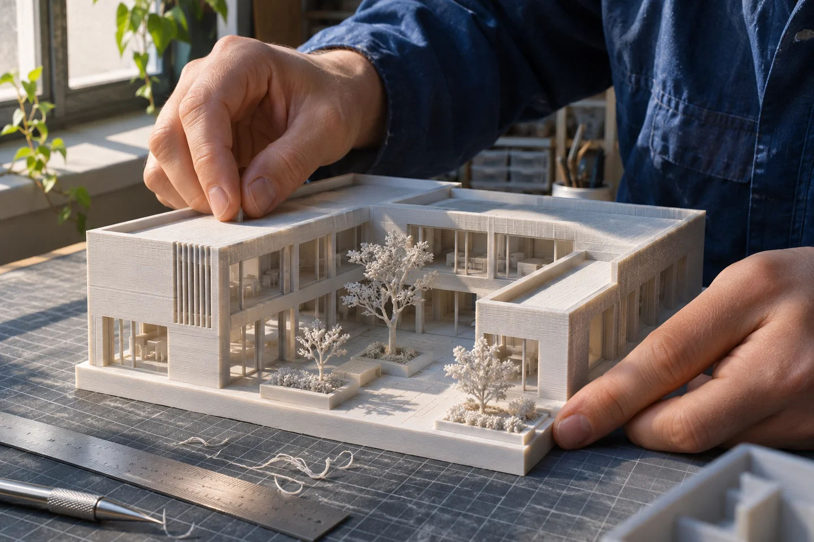
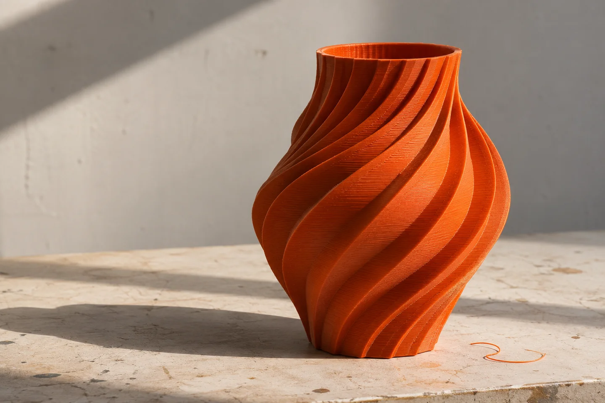

Ideas que toman escala.
Maquetas y prototipos para ver un proyecto desde otro lugar.
Explorar maquetasLUQUE, PARAGUAY / IMPRESIÓN 3D
Piezas que se usan, se prueban
y se pueden tocar.
Empezamos con lo que tenés en mente.

PENSAR ANTES DE IMPRIMIR
Una maqueta no necesita lo mismo que un repuesto. Ni un trofeo lo mismo que una pieza flexible. Por eso, antes de imprimir hablamos de uso, tamaño y material.
Conocé lo que podemos hacerUna mirada al tipo de objetos que permite fabricar la impresión 3D.

Maquetas y prototipos para ver un proyecto desde otro lugar.
Explorar maquetasUna forma, un relieve, una textura. Distintas decisiones para cada pieza.
Ver trabajos reales en InstagramUN ARCHIVO. UNA IDEA. UNA CONVERSACIÓN.